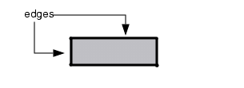
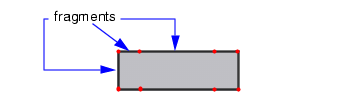
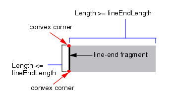
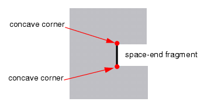
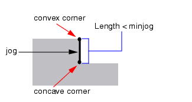
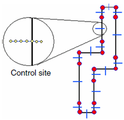
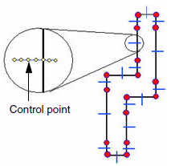
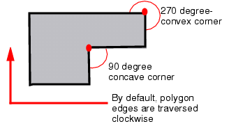

Fragment Type or Object |
Description |
|
|---|---|---|
Edge |
A line segment between two corners. |
 |
Fragment |
A line segment between two vertices. Fragments, which are also called “edge fragments,” can be an entire edge (if the two vertices are both corners) or a part of an edge (if at least one vertex is not a corner). |
 |
Line-end fragment |
An entire edge that satisfies all of the following criteria:
|
 |
Space-end fragment |
An entire edge that satisfies all of the following criteria:
|
 |
Jog |
A fragment that satisfies all of the following criteria:
|
 |
Control site |
Locations on the opc layer where simulation data is evaluated for edge placement errors. The RET tools create on control site on every fragment except for jog fragments. |
 |
Control point |
Locations on a control site where the RET tools calculate the image intensities. Control points are numbered from the lightest area to darkest area, beginning with point 0. With clear background setting features, control points are numbered from the exterior of a figure inwards. |
 |
Feature |
A non-collinear corner. Features are typically corners of nearby polygons. However, they can also be corners on the same polygon as the edge being fragmented. |
|
Convex corner Concave corner |
Generally, polygon edges are traversed clockwise. |
 |